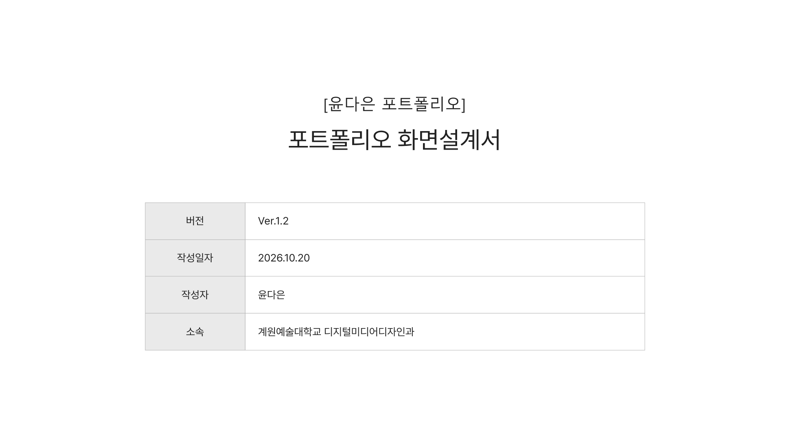

COMPASS
COMPASS 스토리보드
비교를 성장으로 연결하는 서비스를 기획하다.
- 진행 기간
- 2026.07 ~ 2026.12
- 팀 인원
- 6명
- 참여 팀원
- 김아현, 김하온, 신유진, 윤다은, 윤채원, 장현진
- 기여도
- 웹사이트 구현 전담 · 웹 콘텐츠 공동 기획
- 담당 업무
- 웹 빌딩, 웹 콘텐츠 공동 기획, 브랜딩 영역 디자인 재작업
STORYBOARD
화면설계서
PREVIEW
와이어프레임 미리보기
로그인과 온보딩
홈 화면
탐색과 마음 나침반
나침반에서 비교 대상 추가
오늘의 미션 기록
여정과 프로필
지도와 미션 설정
NEXT PROJECT